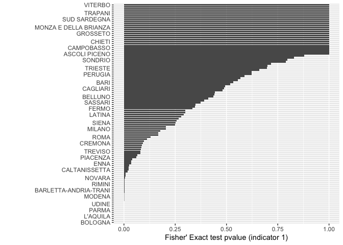

The goal of coresoi is to …
Installation
You can install the development version of core-soi from GitHub with:
# install.packages("devtools")
devtools::install_github("CORE-forge/coresoi")Example: Compute indicator High Winning Rate
it computes the indicator n° 1 which mainly accounts for companies that after the Emergency outbreak (say Covid-19) were awarded public contracts much more frequently than before the Emergency.
library(coresoi)
library(dplyr)
#>
#> Attaching package: 'dplyr'
#> The following objects are masked from 'package:stats':
#>
#> filter, lag
#> The following objects are masked from 'package:base':
#>
#> intersect, setdiff, setequal, union
## basic example code with ind_1() i.e. High Winning Rate
ind_1_res <- ind_1(
data = test_data_bndcp_core,
publication_date = data_pubblicazione,
cpv = cod_cpv,
group = nome_regione2
) %>%
mutate(
across(where(is.numeric), ~round(., 3))
) %>%
filter(nome_regione2 != "")
ind_1_res
#> # A tibble: 20 × 5
#> # Rowwise:
#> nome_regione2 prop_test correct_prop_test fisher_test fisher_estimate
#> <fct> <dbl> <dbl> <dbl> <dbl>
#> 1 Abruzzo 0.741 0.725 0.55 0.938
#> 2 Basilicata 1 1 0 0.338
#> 3 Calabria 0.004 0.005 0.01 1.47
#> 4 Campania 1 1 0 0.397
#> 5 Emilia-Romagna 0.796 0.789 0.408 0.959
#> 6 Friuli-Venezia Giulia 1 1 0 0.23
#> 7 Lazio 0 0 0 1.22
#> 8 Liguria 1 1 0 0.669
#> 9 Lombardia 0 0 0 1.30
#> 10 Marche 0 0 0 2.12
#> 11 Molise 0.954 0.864 0.249 0
#> 12 Piemonte 1 1 0 0.693
#> 13 Puglia 0.631 0.619 0.756 0.979
#> 14 Sardegna 0 0 0 1.62
#> 15 Sicilia 0.928 0.923 0.149 0.905
#> 16 Toscana 1 1 0 0.475
#> 17 Trentino-Alto Adige 1 1 0 0.441
#> 18 Umbria 1 1 0 0.654
#> 19 Valle d'Aosta 0.346 0.417 0.717 1.16
#> 20 Veneto 0 0 0 1.19Let’s now visualize results for top 10 provinces by Fisher Estimate.
library(ggplot2)
library(forcats)
library(tidyr)
ggplot(drop_na(ind_1_res), aes(y = fct_reorder(nome_regione2, fisher_test), x = fisher_test)) +
geom_col() +
labs(
y = "",
x = "Fisher test pvalue"
)
CORE ecosystem
coresoi is part of of the project CO.R.E.- Corruption risk indicators in emergency, financed by the EU Commission, as part of the Internal Police Security Fund (ISF-P) program, The project presented by the Department of Political Sciences as leader with the coordination of Prof. Gnaldi (PI) was funded for a total of 514 thousand euros. The working group is made up of colleagues Prof. Enrico Carloni, Prof. Marco Mazzoni, Prof. Benedetto Ponti, Prof. Maria Giovanna Ranalli. The international network involves Universitat Obierta Catalunya (Spain), Dublin City University (Ireland), Oficina Antifrau de Catalunya (Spain), Infonodes (Italy), Transparency International (Portugal), Villa Montesca Foundation (Italy). The C.R.E. focuses on assessing the risk of corruption in public procurement from a preventive perspective. In view of achieving this goal, central to the European agenda, CO.R.E. it therefore intends to develop and validate a procedure for constructing a synthetic indicator of the risk of corruption in an emergency period that can be usefully used by national anti-corruption agencies, the media and citizens for accountability purposes.
üìù TODOs
- setup google analytics
- build a template for package
- less error prone function indicators (+ escapes, type checkers etc.)
- fix aggregation bug on
ind_11()
Code of Conduct
Please note that the core-soi project is released with a Contributor Code of Conduct. By contributing to this project, you agree to abide by its terms.